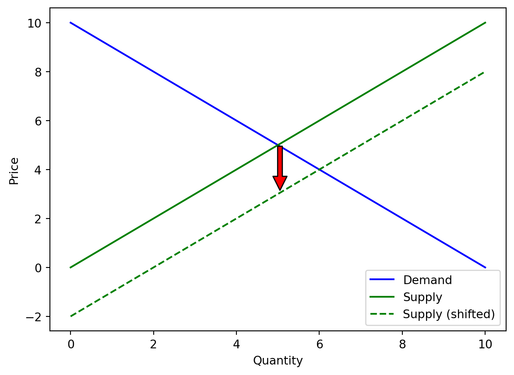

Supply Curve in 2014: \[\begin{equation}
S(q) = x
\end{equation}\]
Supply Curve in 2015: \[\begin{equation}
S(q) = x - 2
\end{equation}\]
Code
import matplotlib.pyplot as pltimport numpy as np# Define a function for demand curvedef demand_curve(x):return10- x# Define a function for supply curvedef supply_curve(x):return x# Define a function for shifted supply curvedef shifted_supply_curve(x):return x -2# Decrease in quantity supplied at every price level# Create a range of quantity valuesquantity = np.linspace(0, 10, 100)# Calculate price values for demand and supply curvesdemand_price = demand_curve(quantity)supply_price = supply_curve(quantity)shifted_supply_price = shifted_supply_curve(quantity)# Plot the demand curveplt.plot(quantity, demand_price, label='Demand', color='blue')# Plot the supply curveplt.plot(quantity, supply_price, label='Supply', color='green')# Plot the shifted supply curveplt.plot(quantity, shifted_supply_price, label='Supply (shifted)', linestyle='--', color='green')# Add an arrow annotation to indicate the shift directionmid_index =len(quantity) //2plt.annotate('', xy=(quantity[mid_index], shifted_supply_price[mid_index]), xytext=(quantity[mid_index], supply_price[mid_index]), arrowprops=dict(facecolor='red', shrink=0.05))# Add labels and legendplt.xlabel('Quantity')plt.ylabel('Price')plt.legend()# Display the plotplt.show()

Given the real data, how to look at them combined with the math?
We can use the following code to fit the actual data points first, and then see the supply shifting.
Code
import numpy as npimport matplotlib.pyplot as plt# Define your dataPrice_per_Pound = np.array([2.00, 2.25, 2.50, 2.75, 3.00, 3.25, 3.50])Quantity_Supplied_2014 = np.array([80, 120, 160, 200, 230, 250, 270])Quantity_Supplied_2015 = np.array([400, 480, 550, 600, 640, 670, 700])Quantity_Demanded = np.array([840, 680, 550, 450, 350, 250, 200]) # Assuming this is your demand data# Fit lines to the dataslope_2014, intercept_2014 = np.polyfit(Price_per_Pound, Quantity_Supplied_2014, 1)slope_2015, intercept_2015 = np.polyfit(Price_per_Pound, Quantity_Supplied_2015, 1)slope_demand, intercept_demand = np.polyfit(Price_per_Pound, Quantity_Demanded, 1) # Fitting demand data# Generate coordinates for the best fit linesbest_fit_line_2014 = slope_2014 * Price_per_Pound + intercept_2014best_fit_line_2015 = slope_2015 * Price_per_Pound + intercept_2015best_fit_line_demand = slope_demand * Price_per_Pound + intercept_demand # Line for demand# Plot the data pointsplt.scatter(Price_per_Pound, Quantity_Supplied_2014, color='blue', label='Quantity Supplied 2014')plt.scatter(Price_per_Pound, Quantity_Supplied_2015, color='red', label='Quantity Supplied 2015')plt.scatter(Price_per_Pound, Quantity_Demanded, color='green', label='Quantity Demanded') # Plotting demand data# Plot the best fit linesplt.plot(Price_per_Pound, best_fit_line_2014, color='blue', linestyle='-')plt.plot(Price_per_Pound, best_fit_line_2015, color='red', linestyle='--')plt.plot(Price_per_Pound, best_fit_line_demand, color='green', linestyle='-') # Plotting demand line# Add an arrow showing the shift in supply from 2014 to 2015mid_price = Price_per_Pound[len(Price_per_Pound)//2]plt.annotate("", xy=(mid_price, slope_2015*mid_price+intercept_2015), xycoords='data', xytext=(mid_price, slope_2014*mid_price+intercept_2014), textcoords='data', arrowprops=dict(arrowstyle="->", connectionstyle="arc3", color='red'))# Add labels and a legendplt.xlabel('Price per Pound')plt.ylabel('Quantity')plt.legend()# Show the plotplt.show()
Supply Curve in 2014: \[\begin{equation}
S(q) = -166.43 +128.57 \times x
\end{equation}\]
Supply Curve in 2015: \[\begin{equation}
S(q) = 38.93 + 195.71 \times x
\end{equation}\]
Source Code
---title: "Economics Books Figure"format: html: code-fold: trueauthor: Lifeng Rendate: Jul/07/2023---## For the following table, there is a Supply change| Price per Pound | Quantity Supplied 2014 | Quantity Supplied 2015 | Quantity Demanded ||---|---|---|---|| 2.00 | 80 | 400 | 840 || 2.25 | 120 | 480 | 680 || 2.50 | 160 | 550 | 550 || 2.75 | 200 | 600 | 450 || 3.00 | 230 | 640 | 350 || 3.25 | 250 | 670 | 250 || 3.50 | 270 | 700 | 200 |Using code to visulize it```{python}import pandas as pdimport matplotlib.pyplot as plt# Create a DataFrame with your datadf = pd.DataFrame({"Price_per_Pound": [2.00, 2.25, 2.50, 2.75, 3.00, 3.25, 3.50],"Quantity_Supplied_2014": [80, 120, 160, 200, 230, 250, 270],"Quantity_Supplied_2015": [400, 480, 550, 600, 640, 670, 700],"Quantity_Demanded": [840, 680, 550, 450, 350, 250, 200]})# Save DataFrame to a CSV filedf.to_csv("data.csv", index=False)# Read data from CSV filedata = pd.read_csv("data.csv")# Plot the demand curveplt.plot(data["Quantity_Demanded"], data["Price_per_Pound"], label='Demand', color='blue')# Plot the supply curve for 2014plt.plot(data["Quantity_Supplied_2014"], data["Price_per_Pound"], label='Supply 2014', color='green')# Plot the supply curve for 2015plt.plot(data["Quantity_Supplied_2015"], data["Price_per_Pound"], label='Supply 2015', linestyle='--', color='green')# Add an arrow annotation to indicate the shift directionmid_index =len(data) //2plt.annotate('', xy=(data["Quantity_Supplied_2015"].iloc[mid_index], data["Price_per_Pound"].iloc[mid_index]), xytext=(data["Quantity_Supplied_2014"].iloc[mid_index], data["Price_per_Pound"].iloc[mid_index]), arrowprops=dict(facecolor='red', shrink=0.05))# Add labels and legendplt.xlabel('Quantity')plt.ylabel('Price per Pound')plt.legend()# Display the plotplt.show()```## How to understand this in a mathmatical way?### Let us consider the most simple case with linear demand and supply curvesDemand Curve:\begin{equation} D(q) = 10-x\end{equation}Supply Curve in 2014:\begin{equation} S(q) = x\end{equation}Supply Curve in 2015:\begin{equation} S(q) = x - 2\end{equation}```{python}import matplotlib.pyplot as pltimport numpy as np# Define a function for demand curvedef demand_curve(x):return10- x# Define a function for supply curvedef supply_curve(x):return x# Define a function for shifted supply curvedef shifted_supply_curve(x):return x -2# Decrease in quantity supplied at every price level# Create a range of quantity valuesquantity = np.linspace(0, 10, 100)# Calculate price values for demand and supply curvesdemand_price = demand_curve(quantity)supply_price = supply_curve(quantity)shifted_supply_price = shifted_supply_curve(quantity)# Plot the demand curveplt.plot(quantity, demand_price, label='Demand', color='blue')# Plot the supply curveplt.plot(quantity, supply_price, label='Supply', color='green')# Plot the shifted supply curveplt.plot(quantity, shifted_supply_price, label='Supply (shifted)', linestyle='--', color='green')# Add an arrow annotation to indicate the shift directionmid_index =len(quantity) //2plt.annotate('', xy=(quantity[mid_index], shifted_supply_price[mid_index]), xytext=(quantity[mid_index], supply_price[mid_index]), arrowprops=dict(facecolor='red', shrink=0.05))# Add labels and legendplt.xlabel('Quantity')plt.ylabel('Price')plt.legend()# Display the plotplt.show()```## Given the real data, how to look at them combined with the math?We can use the following code to fit the actual data points first, and then see the supply shifting.```{python}import numpy as npimport matplotlib.pyplot as plt# Define your dataPrice_per_Pound = np.array([2.00, 2.25, 2.50, 2.75, 3.00, 3.25, 3.50])Quantity_Supplied_2014 = np.array([80, 120, 160, 200, 230, 250, 270])Quantity_Supplied_2015 = np.array([400, 480, 550, 600, 640, 670, 700])Quantity_Demanded = np.array([840, 680, 550, 450, 350, 250, 200]) # Assuming this is your demand data# Fit lines to the dataslope_2014, intercept_2014 = np.polyfit(Price_per_Pound, Quantity_Supplied_2014, 1)slope_2015, intercept_2015 = np.polyfit(Price_per_Pound, Quantity_Supplied_2015, 1)slope_demand, intercept_demand = np.polyfit(Price_per_Pound, Quantity_Demanded, 1) # Fitting demand data# Generate coordinates for the best fit linesbest_fit_line_2014 = slope_2014 * Price_per_Pound + intercept_2014best_fit_line_2015 = slope_2015 * Price_per_Pound + intercept_2015best_fit_line_demand = slope_demand * Price_per_Pound + intercept_demand # Line for demand# Plot the data pointsplt.scatter(Price_per_Pound, Quantity_Supplied_2014, color='blue', label='Quantity Supplied 2014')plt.scatter(Price_per_Pound, Quantity_Supplied_2015, color='red', label='Quantity Supplied 2015')plt.scatter(Price_per_Pound, Quantity_Demanded, color='green', label='Quantity Demanded') # Plotting demand data# Plot the best fit linesplt.plot(Price_per_Pound, best_fit_line_2014, color='blue', linestyle='-')plt.plot(Price_per_Pound, best_fit_line_2015, color='red', linestyle='--')plt.plot(Price_per_Pound, best_fit_line_demand, color='green', linestyle='-') # Plotting demand line# Add an arrow showing the shift in supply from 2014 to 2015mid_price = Price_per_Pound[len(Price_per_Pound)//2]plt.annotate("", xy=(mid_price, slope_2015*mid_price+intercept_2015), xycoords='data', xytext=(mid_price, slope_2014*mid_price+intercept_2014), textcoords='data', arrowprops=dict(arrowstyle="->", connectionstyle="arc3", color='red'))# Add labels and a legendplt.xlabel('Price per Pound')plt.ylabel('Quantity')plt.legend()# Show the plotplt.show()```Demand Curve:\begin{equation} D(q) = 1645-x\end{equation}Supply Curve in 2014:\begin{equation} S(q) = -166.43 +128.57 \times x \end{equation}Supply Curve in 2015:\begin{equation} S(q) = 38.93 + 195.71 \times x\end{equation}